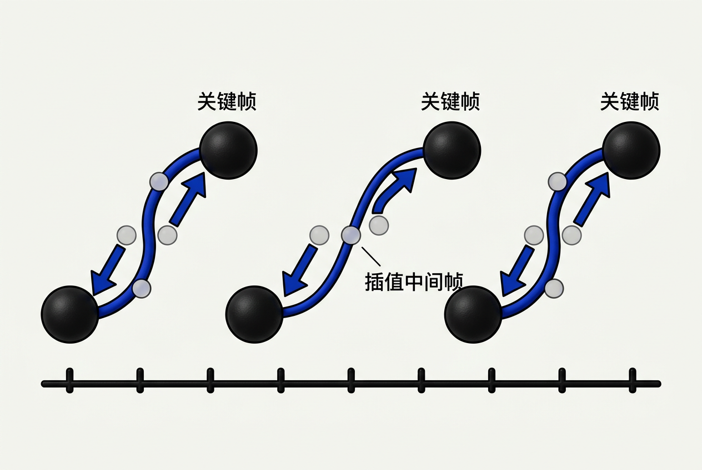
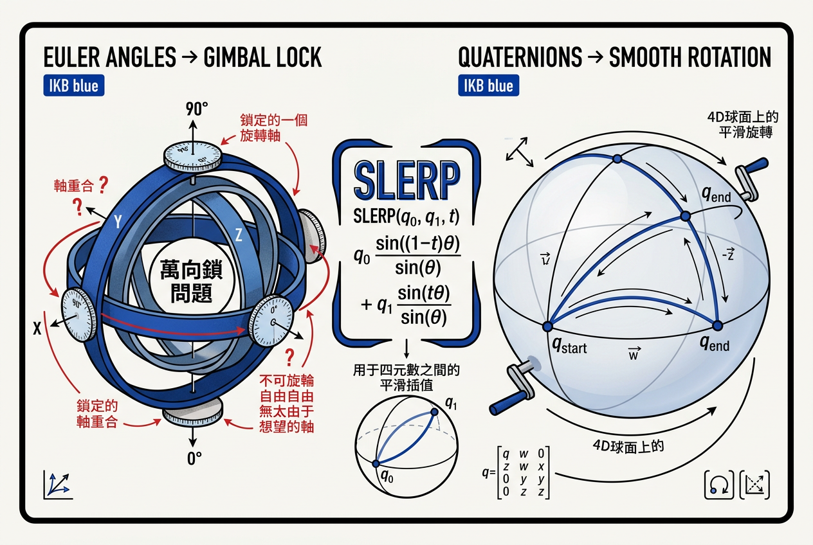
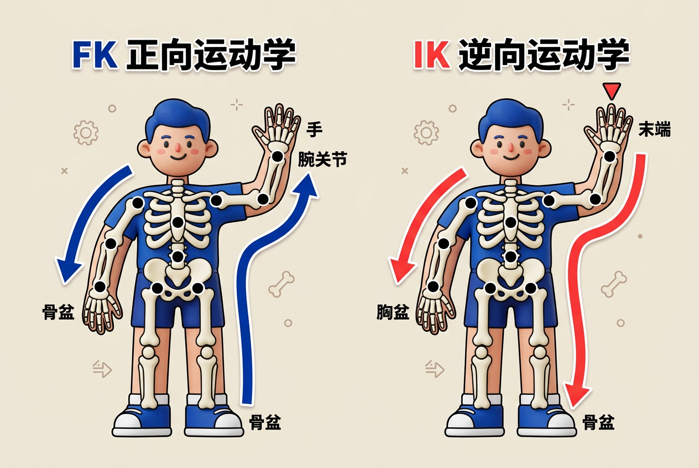
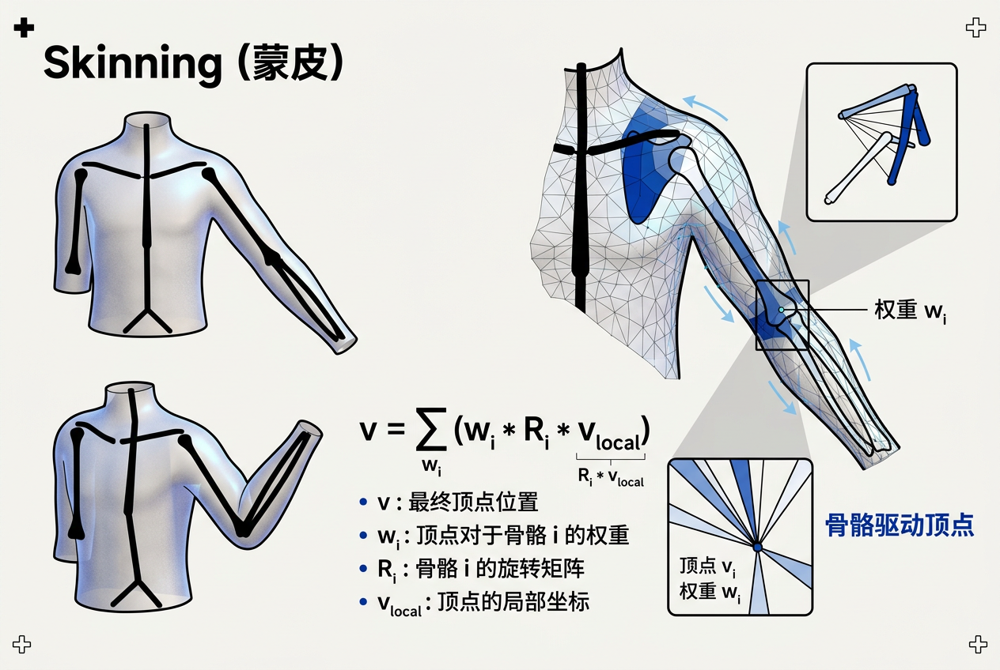
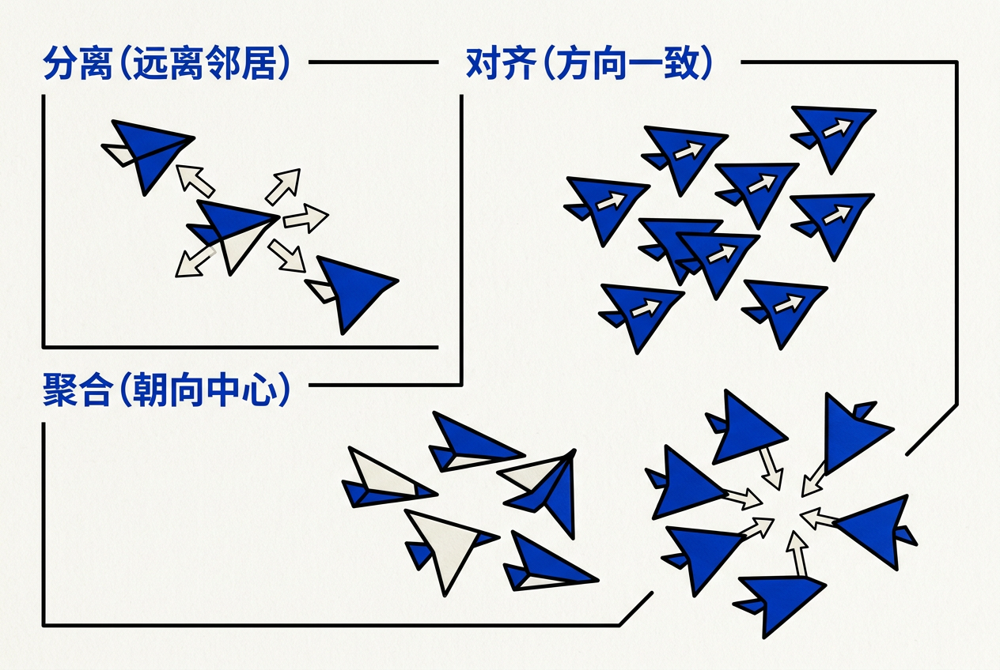

第16章：计算机动画（Computer Animation）— 零基础讲义
讲义说明
本讲义基于 Steve Marschner & Peter Shirley 所著《虎书5》第5版第16章（p.429-458）。
本章是图形学的"运动"——它告诉你：怎么让3D物体"动起来"。
学完本章，你将真正理解 Keyframe、Forward/Inverse Kinematics、Physics-Based Animation、Particle System、Boids Flocking 等核心技术。
本版插画采用 Guizang 材质插画风格重新绘制。
学习目标
- 理解动画的12条原则（Disney）
- 掌握Keyframing和Catmull-Rom样条
- 理解3种旋转表示：Euler / Quaternion / Axis-Angle
- 掌握Forward Kinematics vs Inverse Kinematics
- 掌握Skinning（骨骼蒙皮）
- 掌握Physics-Based Animation（布料/流体/碰撞）
- 掌握Procedural Animation（粒子/L-system/Boids）
- 理解群体动画（Flocking）
16.1 动画的12条原则
16.1.1 Disney的遗产
1981年，迪士尼资深动画师 Ollie Johnston 和 Frank Thomas 出版了《The Illusion of Life》一书，总结了12条动画基本原则。这些原则来自几十年手工动画经验，至今仍是3D计算机动画的黄金准则。
| # | 原则 | 含义 | 3D实现 |
|---|---|---|---|
| 1 | Squash & Stretch | 挤压和拉伸——物体运动时形状变化 | 骨骼缩放/变形器 |
| 2 | Anticipation | 预备动作——起跳前先下蹲 | 关键帧中插入反向运动 |
| 3 | Staging | 舞台化——让观众注意关键动作 | 相机镜头+灯光引导 |
| 4 | Straight Ahead / Pose to Pose | 逐帧画 vs 关键帧+中间帧 | 关键帧动画 |
| 5 | Follow Through | 跟随动作——头发/披风滞后 | 物理模拟/弹簧系统 |
| 6 | Slow In / Slow Out | 缓入缓出——开始和结束慢，中间快 | 动画曲线（缓动函数） |
| 7 | Arcs | 弧线运动——几乎所有自然运动都是弧线 | Catmull-Rom/Bézier曲线 |
| 8 | Secondary Action | 次要动作——走路时手臂摆动+呼吸 | 分层动画/混合 |
| 9 | Timing | 时机——速度决定情感和含义 | 关键帧间距控制速度 |
| 10 | Exaggeration | 夸张——突出动作特点 | 关键帧幅度放大 |
| 11 | Solid Drawing | 立体感——3D空间中的重量和体积 | 3D建模+光照 |
| 12 | Appeal | 魅力——角色的吸引力 | 角色设计+动作风格 |
16.2 关键帧与插值

16.2.1 关键帧思想
工作流程：
- 动画师在时间轴上的几个关键点设置物体的位置/旋转/缩放
- 系统在这些关键点之间插值，生成所有的中间帧
- 动画师调整插值曲线（缓入缓出）来控制速度感
优势：
- 不用画每一帧——效率提升数百倍
- 艺术家掌控关键点的节奏
- 修改一个关键帧不影响其他帧（局部控制）
16.2.2 动画曲线（Animation Curves）
关键帧之间用什么曲线插值？
| 插值方式 | 连续度 | 效果 | 使用场景 |
|---|---|---|---|
| 线性插值 | C⁰ | 生硬，速度突变 | 机械运动 |
| Catmull-Rom | C¹ | 平滑，自动缓入缓出 | 行业标准 |
| Hermite（TCB） | C¹ | 可独立控制tension/continuity/bias | 高级动画编辑 |
| Bézier | G¹ | 直观的切线手柄 | Maya/Blender默认 |
16.2.3 TCB控件（Kochanek-Bartels）
TCB是三个参数的缩写，它们控制曲线在每个关键点处的行为：
| 参数 | 范围 | 默认值 | 负值效果 | 正值效果 |
|---|---|---|---|---|
| Tension（紧绷度） | [-1, 1] | 0 | 曲线松弛（像橡皮筋） | 曲线紧绷（接近直线） |
| Continuity（连续度） | [-1, 1] | 0 | 曲线"急转"（停顿感） | 曲线"弹回"（回弹感） |
| Bias（偏向度） | [-1, 1] | 0 | 曲线偏向关键点之后 | 曲线偏向关键点之前 |
16.2.4 弧长参数化与速度控制
问题：参数u在曲线上走"等距不是等弧长"。u从0走到0.1可能只移动了很短距离，而从0.5走到0.6移动了很长距离。所以直接用u控制速度是不对的。
解决方案：
s(u)称为弧长函数，它把参数u映射到实际走过的距离。
实际做法：
- 预计算：在曲线上采样N个点，累加距离，建立u→s的查找表
- 查表：给定目标距离s，在表中查找对应的u
- 插值：在表项之间线性插值得到精确的u
- 求值：用u计算f(u)
16.3 插值旋转
16.3.1 旋转的挑战
3D旋转比3D位置复杂得多。位置是3D向量（直接线性插值即可），但旋转不是向量——它有特殊的结构。

16.3.2 3种旋转表示对比
| 表示 | 自由度 | 优点 | 缺点 |
|---|---|---|---|
| 欧拉角（Euler） | 3（X,Y,Z角度） | 直观、易理解 | 万向锁（Gimbal Lock）、插值不直 |
| 轴-角（Axis-Angle） | 4（轴向量+角度） | 直观、无万向锁 | 插值困难（直接线性插值会导致旋转加速） |
| 四元数（Quaternion） | 4（w,x,y,z） | 无万向锁、插值平滑 | 不直观、调试困难 |
16.3.3 欧拉角与万向锁
万向锁（Gimbal Lock）：当绕一个轴旋转90°时，另外两个轴变得"等效"——失去1个自由度。
数值例子：
初始旋转 (0°, 0°, 0°) → 普通方向
旋转到 (0°, 90°, 0°) → 万向锁！
现在绕X轴和Z轴的旋转效果相同 → 你"丢了一个轴"
目标旋转 (90°, 90°, 0°) → 应该朝向某个方向
但欧拉角插值会走"弯路"：先绕Y轴90°，再绕X轴90°
而正确的路径应该是直接旋转 → 插值错误一个具体的数学问题：旋转0°和180°的插值。
直接线性插值欧拉角：中间帧 = (0°, 0°, 90°)——这是正确的。但如果绕不同轴：
中间帧 = (90°, 0°, 0°)——也正确。但是！如果先做90°Y轴旋转再绕X轴：
中间状态 (90°, 90°, 0°) → 这个方向和 (90°, 0°, 90°) 是相同旋转！
但是路径完全不同——这就是万向锁的插值错乱。16.3.4 四元数与SLERP插值
四元数 = 4D单位球上的点
它表示绕轴(x,y,z)旋转角度2·arccos(w)。
SLERP（球面线性插值）：
逐符号拆解：
- q₁, q₂ = 起始和结束四元数（4D单位球上的点）
- θ = q₁和q₂之间的夹角 = arccos(q₁·q₂)
- t = 插值参数（0→在q₁，1→在q₂）
- sin((1-t)θ) = 球面上沿大圆路径走"剩余角度"的权重
- sin(tθ) = 球面上沿大圆路径走"已走角度"的权重
- ÷sinθ = 归一化因子，确保总权重和为1
16.4 变形技术
16.4.1 全局变形
| 变形类型 | 效果 | 公式 |
|---|---|---|
| Bend（弯曲） | 物体沿一个轴弯曲 | θ = k·x, 点绕弯曲轴旋转 |
| Twist（扭曲） | 物体两端相对旋转 | θ = k·y, 比例随高度变化 |
| Taper（锥化） | 物体一端大一端小 | s = 1 - k·y, 点按比例缩放 |
| Squash（挤压） | 压扁或拉长 | 整体缩放（非均匀） |
16.4.2 FFD（Free-Form Deformation）
公式（3D三角Bézier张量积）：
工作流程：
- 建立一个3D控制网格（lattice），把要变形的物体包在里面
- 计算物体每个顶点在网格中的局部坐标(s,t,u)
- 动画师移动网格的控制点（就像操作Bézier曲线一样）
- 对每个顶点，用三线性Bernstein基函数计算新的位置
16.5 角色动画：骨骼、FK、IK、Skinning

16.5.1 骨骼层次（Skeleton Hierarchy）
角色动画的核心：用骨骼（Bones/Joints）的层次结构驱动皮肤（Mesh Vertices）的变形。
# 人体骨骼层次结构（简化）
Root（骨盆）
├── Spine（脊柱）
│ ├── Neck（脖子）
│ │ └── Head（头）
│ └── L_Shoulder（左肩）
│ ├── L_Elbow（左肘）
│ │ └── L_Hand（左手）
└── R_Hip（右髋）
├── R_Knee（右膝）
│ └── R_Ankle（右脚踝）
│ └── R_Toe（右脚尖）
# 每个关节存储：
# - 局部变换（相对父关节的位置/旋转）
# - 世界变换（通过从根到该节点连乘计算）16.5.2 正向运动学（Forward Kinematics, FK）
def forward_kinematics(joints):
# 从根关节开始，深度优先遍历
for joint in joints:
if joint.parent is None:
joint.world_pos = joint.local_pos # 根关节
else:
# 当前关节的世界位置 = 父关节的世界位置 + 旋转后的局部偏移
R = joint.parent.rotation # 父关节的旋转矩阵
joint.world_pos = joint.parent.world_pos + R * joint.local_pos
# 注意：旋转会级联传递（子关节继承父关节的旋转）
joint.world_rotation = joint.parent.world_rotation * joint.local_rotation| 特性 | FK | IK |
|---|---|---|
| 输入 | 所有关节角度 | 目标末端位置 |
| 输出 | 末端位置 | 所有关节角度 |
| 控制方式 | 手动调每个关节 | 指定末端，自动算关节 |
| 适用场景 | 全身动作（走路、跳舞） | 脚踩地、手拿东西 |
| 计算复杂度 | O(n)，简单 | O(n³)甚至更慢，需要迭代 |
16.5.3 逆向运动学（Inverse Kinematics, IK）
数学形式：
其中J是Jacobian矩阵：J_{ij} = ∂pᵢ/∂αⱼ
逐符号拆解：
- p_target = 目标末端位置（你想让手碰到的地方）
- p_current = 当前末端位置
- Δα = 关节角度的变化量（未知数，要求解的）
- J = Jacobian矩阵——每个元素∂pᵢ/∂αⱼ表示"第j个关节转一点，末端位置第i分量变多少"
CCD算法（Cyclic Coordinate Descent）——最简单的IK求解：
def ik_ccd(joints, target_pos, max_iterations=10):
for iter in range(max_iterations):
# 从末端关节开始，反向调整每个关节
for i in range(len(joints)-1, -1, -1):
joint = joints[i]
# 计算从当前关节到末端的方向
to_end = end_effector_pos - joint.world_pos
# 计算从当前关节到目标的方向
to_target = target_pos - joint.world_pos
# 旋转当前关节使to_end朝向to_target
rotation = get_rotation_between(to_end, to_target)
joint.rotation *= rotation
# 更新所有子关节的位置
update_child_positions(joint)
# 检查是否达到目标
if distance(end_effector_pos, target_pos) < epsilon:
break- FK是"推"——从根部推，所有关节连锁运动，末端自然跟着动
- IK是"拉"——指定末端位置，系统反向计算每个关节该转多少
- 实际游戏中两者结合使用：身体用FK，手和脚用IK
16.5.4 Skinning（蒙皮）

Rigid Skinning（刚性蒙皮）：每个顶点只受一个骨骼影响。
缺点：关节处会断裂，像"木偶"。
Smooth Skinning / LBS（线性混合蒙皮）：每个顶点受多个骨骼影响，按权重混合。
逐符号拆解：
- v_local = 顶点在绑定姿势（T-pose）中的位置
- R(骨骼ᵢ) = 第i个骨骼的变换矩阵（从绑定姿势到当前姿势）
- wᵢ = 第i个骨骼对该顶点的影响权重（∑wᵢ = 1）
- v_world = 顶点变形后的世界坐标
权重"绘画"过程：
- 模型在T-pose（双臂平伸）下建立骨骼
- 动画师"画权重"：用笔刷工具在顶点上画色标（红色=完全受骨骼A影响，蓝色=完全受骨骼B影响）
- 权重归一化：确保每个顶点的权重之和=1
- 测试：弯曲关节，看皮肤变形是否自然
- 调整：修正"塌陷"或"糖果纸"（关节扭曲）问题，通常增加中间骨骼或调整权重
16.5.5 面部动画
3个层次的复杂性：
| 层次 | 方法 | 例子 |
|---|---|---|
| 1. 关节变形 | 骨骼+蒙皮 | 下巴开合、眉毛挑起 |
| 2. 肌肉模拟 | FACS（面部动作编码系统） | 真实肌肉收缩模拟 |
| 3. 表情混合 | Blend Shapes（混合变形） | "高兴+惊讶"→"惊喜" |
16.6 基于物理的动画
16.6.1 核心思想
| 方法 | 方程 | 应用 |
|---|---|---|
| 质点弹簧 | F = -k·x（胡克定律） | 布料、头发、绳索 |
| 刚体动力学 | F = ma, τ = Iα | 碰撞、堆叠、破碎 |
| 流体模拟 | Navier-Stokes | 水、烟、火 |
| 有限元 | 弹性力学方程 | 肌肉、软组织 |
16.6.2 布料模拟
质点弹簧模型：布料 = 网格状的质点 + 弹簧
- 结构弹簧：连接相邻顶点，抵抗拉伸（刚度k₁）
- 剪切弹簧：连接对角线顶点，抵抗剪切变形（刚度k₂）
- 弯曲弹簧：跳过1个顶点，抵抗弯曲（刚度k₃）
约束求解（每帧迭代Gauss-Seidel）：
# 每帧执行的布料求解
for iter in range(10): # 迭代次数越多越准确
for each constraint: # 对每个弹簧约束
# 如果弹簧拉伸超过原长
delta = constraint.length - constraint.rest_length
if delta > 0:
# 把两个顶点往中间拉
p1 += stiffness * delta * direction / 2
p2 -= stiffness * delta * direction / 216.6.3 数值积分方法
将微分方程离散化求解：
| 方法 | 公式 | 稳定性 | 速度 | 适用 |
|---|---|---|---|---|
| 显式Euler | f(t+Δt)=f(t)+Δt·df/dt | 差（Δt需很小） | 最快 | 简单教学 |
| 隐式Euler | 解方程组 | 好（可大步长） | 慢（解方程） | 布料、流体 |
| Verlet | x(t+Δt)=2x(t)-x(t-Δt)+a·Δt² | 好 | 快 | 游戏粒子 |
| RK4 | 4阶Runge-Kutta | 好 | 中等 | 精确模拟 |
16.6.4 流体模拟
| 方法 | 思想 | 优势 | 劣势 |
|---|---|---|---|
| SPH（光滑粒子流体动力学） | 用粒子表示流体 | 简单、自适应 | 边界处理复杂 |
| 网格法（欧拉） | 在固定网格上求解NS方程 | 稳定、精确 | 内存大、细节少 |
| PIC/FLIP（混合法） | 粒子+网格混合 | 兼得两者优点 | 实现复杂 |
16.7 过程化技术
16.7.1 噪声动画
例子：
- 漂浮：position = noise(x + v·t)——物体随时间上下浮动
- 水面：height = noise(x, y, t)——2D噪声在时间维度演变
- 熔岩灯：color = noise(x, y, z, t)——4D噪声的颜色变化
其中v是"速度"参数，控制动画快慢。noise函数的值在[-1, 1]之间连续变化。
16.7.2 L-System（林系统）
核心要素：
- 终结符（Terminals）：最终绘制指令，如F（前进）、+（左转）、-（右转）、[（入栈）、]（出栈）
- 非终结符（Non-Terminals）：会被替换的符号，如A、B
- 产生式（Productions）：替换规则，如A→F[+A][-A]
- 初始公理（Axiom）：起始字符串
例子——生成分形树：
Axiom: A
Rule: A → F[+A][-A]F
迭代0: A
迭代1: F[+A][-A]F
迭代2: F[+F[+A][-A]F][-F[+A][-A]F]F
...（迭代越多树越复杂）
F = 前进画线
+ = 左转30°
- = 右转30°
[ = 保存当前位置（分支起点）
] = 恢复当前位置（分支结束）16.7.3 元胞自动机（Cellular Automata）
Conway's Game of Life——三规则：
- 死细胞 + 3个活邻居 → 活（出生）
- 活细胞 + 2或3个活邻居 → 活（存活）
- 其他情况 → 死（孤独或拥挤）
应用：森林火灾模拟、雪崩模拟、城市演化、纹理生成。
16.8 群体动画

16.8.1 Boids（Flocking）
Craig Reynolds在1987年提出的Boids模型是群体动画的奠基之作。每只鸟（Boid）只遵循3条简单规则：
| 规则 | 方向 | 公式 | 类比 |
|---|---|---|---|
| 1. 分离（Separation） | 远离太近的邻居 | force_sep = -∑(neighbor_i - self) / |neighbor_i - self|² | 人与人之间保持"安全距离" |
| 2. 对齐（Alignment） | 与邻居速度一致 | force_align = (∑ neighbor_velocity_i / N) - self_velocity | 跟周围人保持相同步调 |
| 3. 聚合（Cohesion） | 往群体的中心移动 | force_coh = (∑ neighbor_pos_i / N) - self_pos | 不想落单 |
完整Boid行为 = w₁·force_sep + w₂·force_align + w₃·force_coh + 其他规则
逐符号拆解：
- neighbor_i = 视野内的第i个邻居（距离<可见半径）
- w₁, w₂, w₃ = 三条规则的权重（控制群体行为类型：w₁大→松散群体，w₂大→整齐队形，w₃大→密集聚集）
- 自我速度更新：velocity += acceleration · dt，position += velocity · dt
# 每帧更新每只Boid
def update_boid(boid, flock):
# 1. 找到视野内的邻居（距离阈值）
neighbors = [b for b in flock if distance(b, boid) < VISION_RADIUS]
if not neighbors:
return # 没有邻居，保持当前速度
# 2. 计算分离力（远离太近的）
separation = vec2(0, 0)
for n in neighbors:
diff = n.pos - boid.pos
if length(diff) < SEPARATION_RADIUS:
separation -= normalize(diff) / length(diff)
# 3. 计算对齐力（与邻居方向一致）
avg_velocity = average([n.vel for n in neighbors])
alignment = avg_velocity - boid.vel
# 4. 计算聚合力（往群体中心靠）
avg_position = average([n.pos for n in neighbors])
cohesion = avg_position - boid.pos
# 5. 合并三个力（乘以权重）
acceleration = (SEP_WEIGHT * separation +
ALIGN_WEIGHT * alignment +
COH_WEIGHT * cohesion)
# 6. 更新速度和位置
boid.vel += acceleration * dt
# 限制最大速度
if length(boid.vel) > MAX_SPEED:
boid.vel = normalize(boid.vel) * MAX_SPEED
boid.pos += boid.vel * dt16.8.2 粒子系统
粒子系统 = "大量小元素的集合"
| 特性 | 典型值 | 说明 |
|---|---|---|
| 粒子数 | 100~100000 | 越多效果越丰富，性能越差 |
| 生命周期 | 1~10秒 | 粒子从出生到死亡的时间 |
| 发射率 | 10~10000/秒 | 每秒生成的新粒子数 |
| 初始速度 | 随机方向 | 给粒子随机性 |
| 受到力 | 重力、风力、湍流 | 模拟物理效果 |
应用：火、烟、雾、雨、雪、爆炸、魔法、星光、尘土。
16.8.3 自主角色（Autonomous Characters）
Boids的推广——每个个体有更复杂的行为：
- AI驱动：行为由有限状态机（FSM）或行为树（Behavior Tree）决定
- 群体协调：避免重叠、保持队形、任务分配
- 环境感知：障碍物躲避、地形适配
- 目标导向：巡逻、追踪、攻击、逃跑
应用：RTS游戏中的士兵群、MMO中的NPC群体、电影中的群演。
16.8.4 术语对照表
| 英文 | 中文 | 一句话 |
|---|---|---|
| Keyframe | 关键帧 | 动画师指定的关键状态 |
| TCB Spline | TCB样条 | Tension/Continuity/Bias控制 |
| Catmull-Rom | Catmull-Rom样条 | 自动切线的插值曲线 |
| Euler Angle | 欧拉角 | 绕XYZ轴旋转的角度 |
| Quaternion | 四元数 | 4D单位球上的旋转变换 |
| SLERP | 球面线性插值 | 四元数之间的平滑旋转 |
| Gimbal Lock | 万向锁 | 一个轴旋转90°后丢轴 |
| Forward Kinematics | 正向运动学 | 从根推，末端跟着动 |
| Inverse Kinematics | 逆向运动学 | 指定末端，反算关节角 |
| Skinning / LBS | 蒙皮/线性混合蒙皮 | 骨骼驱动顶点变形 |
| FFD | 自由变形 | 控制网格变形物体 |
| Boids / Flocking | 群体动画 | 3条局部规则产生群体 |
| L-System | 林系统 | 文法生成植物结构 |
| Particle System | 粒子系统 | 大量小元素集合 |
16.8.5 全章总结
- 12条原则 = Disney 80年经验的浓缩
- Keyframe + Catmull-Rom = 行业标准的动画制作流程
- 四元数 = 避免万向锁，SLERP保证平滑旋转
- FK/IK = 骨骼动画的核心（推vs拉）
- LBS Skinning = 所有游戏引擎的蒙皮标准
- 物理动画 = 微分方程驱动布料/流体
- 过程化 = 噪声/L-System生成复杂动画
- Boids = 3条简单规则→复杂群体行为
关键公式速查：
| 名称 | 公式 |
|---|---|
| Catmull-Rom切线 | mᵢ = (f_{i+1} - f_{i-1}) / 2Δt |
| TCB控件 | mᵢ = ((1-t)(1-c)(1+b)/2Δt)(f_{i+1}-fᵢ) + ((1-t)(1+c)(1-b)/2Δt)(fᵢ-f_{i-1}) |
| SLERP | q(t) = sin((1-t)θ)/sinθ · q₁ + sin(tθ)/sinθ · q₂ |
| FFD | P(s,t,u) = Σᵢⱼₖ bᵢ(s) bⱼ(t) bₖ(u) p_{i,j,k} |
| LBS Skinning | v = Σ wᵢ · Rᵢ · v_local |
| Jacobian IK | α = α + J⁻¹(p_target - p_current) |
| Boids | separation + alignment + cohesion |
下一步：第17章《使用图形硬件》——学习GPU编程、Shader、DirectX/OpenGL。这是从软件到硬件的跨越。